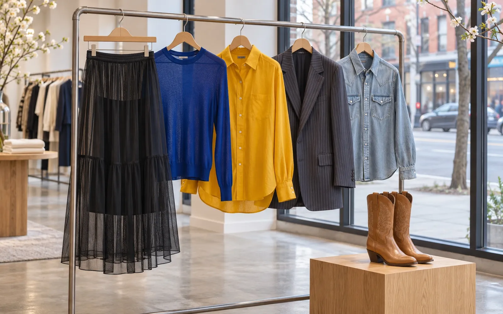

Selling SS27 in North America: holiday spending, tariff costs and what US, Canada and Mexico buyers want
How to plan SS27 for the US, Canada and Mexico: the NRF holiday forecast, new research on tariff pass-through, Canadian and Buen Fin data and NYFW trends.

North America is the biggest single apparel market in Forecut's six regions, and all three of its main countries follow the northern calendar: SS27 reaches stores from February 2027. But the US, Canada and Mexico are in very different moods this autumn. US shoppers are still spending, Canadian clothing sales are growing while prices fall, and in Mexico fashion is the top category for this week's Buen Fin sales event.
United States: a $1 trillion holiday, with careful retailers
The National Retail Federation forecast on 15 October that holiday sales in November and December will grow 4.2% to $1.013 trillion, faster than last year's 3.1% rise to $972 billion. Retailers are more cautious than shoppers: NRF expects 325,000 to 375,000 seasonal hires against about 356,000 last year, citing higher gas prices, persistent inflation, higher interest rates and consumer debt.
Tariffs are the other big question for SS27 costing. A new study by Sheng Lu of the University of Delaware (5 November), using monthly US government data from 2015 to 2025, found that tariff shocks explain only about 1.2% of the variation in US apparel import prices and about 5% of the variation in retail prices over ten months. Retail prices showed no significant rise straight after a tariff shock; a small rise appeared about three months later and soon faded. In plain terms, US retailers rarely pass tariff costs straight to shoppers, so the pressure lands on brand and supplier margins. Duty rules have changed several times since 2025, so confirm the current rate for each country of origin with a customs broker before you fix SS27 prices.
Canada: sales up, prices down, fewer stores
Statistics Canada data reported by FashionUnited and Retail Insider show sales at clothing and clothing accessories retailers of C$3.205 billion in July, up 5.5% on a year earlier. Prices are moving the other way: clothing prices were 1.1% lower year on year in August, with men's clothing down 2.3%, while clothing accessories, watches and jewellery rose 12.1%.
Retail Insider's Q3 report says store productivity now matters more than store count. Harry Rosen replaced a Bloor Street store of more than 50,000 sq ft with a 38,000 sq ft Yorkville flagship. lululemon's Canadian revenue fell 11% in its second quarter and it cut about 15% of SKUs in North American stores. UNIQLO's renovated Montreal flagship added customisation, embroidery and repair, Arc'teryx opened a Montreal store with repair and resale. For SS27, that means tighter ranges, light technical layers for a cool spring, and clear repair or resale messages.
Mexico: fashion leads Buen Fin
Buen Fin 2026 runs for five days, 13 to 17 November. Concanaco Servytur expects it to move about 235 billion pesos, up 7.3% on 2025, with around 79% spent in physical stores and 21% (about 49 billion pesos) online. In the AMVO survey reported by Expansión and Publimetro, fashion was the top planned purchase at 38%, ahead of electronics (30%) and beauty (27%). Mexico is warm all year in most cities, and Forecut's regional data shows buyers there favour colour and craft, artisanal textiles, occasion wear and warm-weather dressing.
What New York showed, and how it matches Forecut tracking
Fashionista's report on New York Fashion Week SS27 described sheer going commercial: see-through skirts worn with covered-up tops (Calvin Klein, Brandon Maxwell), light knits tied low at the waist, and a palette led by cobalt blue and marigold. Ralph Lauren's Pre-Fall 2027, shown on 6 November, then moved to menswear-factory suiting in pinstripe and glen plaid with balloon trousers. Forecut's SS27 tracking lines up with both:
- Mesh midi skirts (peak in SS27, fading in AW27): buy for spring only, with no carry-over into autumn.
- Sheer organza overlays (rising) and sheer fine-gauge layers (peak): the wearable way to sell transparency over an opaque base.
- Contrast sash waists (rising): the low, tied waist from New York in an easy commercial shape.
- Pinstripe suiting (rising, peak expected AW27): a bridge from SS27 tailoring into Pre-Fall.
- Western yokes and pearl snaps (rising, peak expected AW27) and denim midi skirts (rising): denim stays central in the US, and western details keep growing.
What to do now
- Brands: build SS27 around sheer-over-opaque pieces, tied waists, denim and pinstripe tailoring, with cobalt and marigold as accent colours. Keep mesh buys shallow because the detail peaks this season.
- For the US: plan regional assortments (every climate zone is in play) and expect retailers to resist cost increases, so agree prices and margin sharing early.
- For Canada: fewer, stronger SKUs, light outerwear and rainwear for a cool spring, and repair or resale services where you can offer them.
- For Mexico: colour, craft and occasion wear for warm weather, with a fashion offer planned now for Buen Fin in November 2027.
- Manufacturers: quote SS27 with clear country-of-origin details and check current duty rates, because buyers will push tariff costs back up the chain.